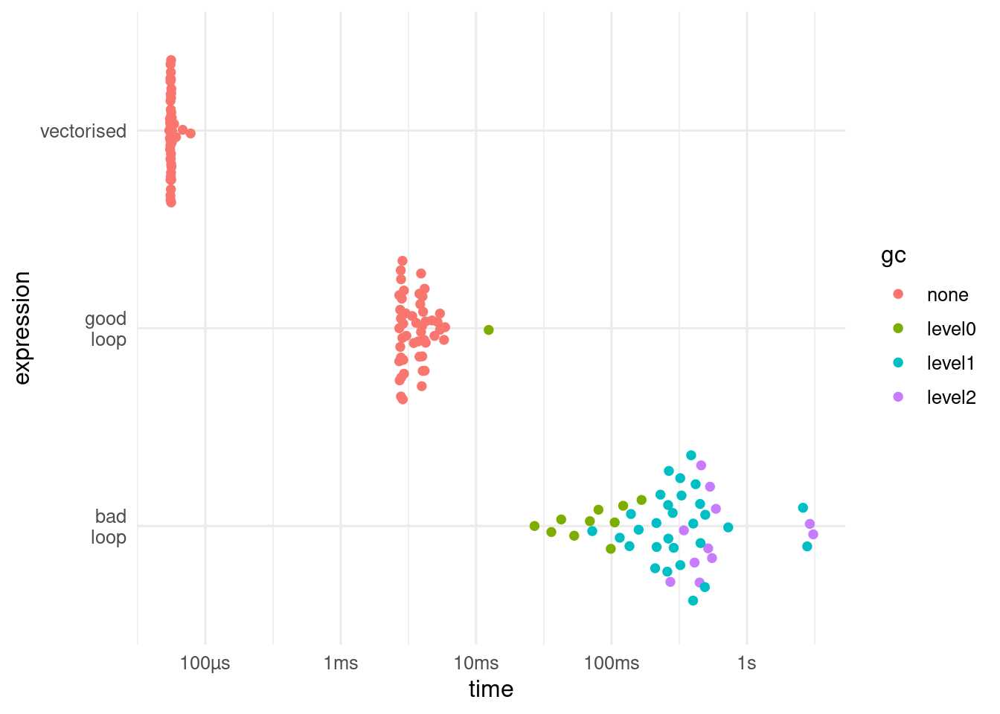

[1] 3716 Running code repeatedly
It is very common to need to run some code repeatedly, for example, to import multiple files, fit models to multiple datasets, or make multiple figures.
One strategy is to create multiple copies of the code. This is a bad idea, especially if there are many copies, violating the DRY (Don’t Repeat Yourself) principle. The problem is that the code can become very long, and it is hard to makes changes in multiple places if you need to update it. Instead it is better to use code to run the task iteratively, so that you only need one copy of the code.
There are a number of strategies for doing this.
16.1 Vectorisation
In some computer languages, if you want to add the element of a vector you need to iterate over them
Fortunately we don’t need to do this in R as we can use the function sum() which is vectorised. The iterating that is needed to calculate the answer is done internally.
sum(v)[1] 37Many R functions are vectorised. If a vectorised function exists for your problem, it is probably the fastest and easiest solution.
Not all functions are vectorised, and sometimes we need something more complex than a single function, and we need another solution.
16.2 for loops
You will sometimes see code using for() loops to iterate. Similar syntax is used in many computer languages.
The minimal code to run a for loop is
for ( i in 1:5) { # i is the counter
print(1:i) # do something with i
}[1] 1
[1] 1 2
[1] 1 2 3
[1] 1 2 3 4
[1] 1 2 3 4 5Well written for loops are fast, but there are some downsides. If we want to keep the result from a for loop, we need to declare it in advance with the correct size. If we write the loop badly, expanding the result one element at a time, it can be very slow.

bench::mark() showing that the vectorised code runs about two orders faster than the well written loop, which in turn runs about two orders of magnitude faster, and calls the garbage collector less often. The speed differential will depend on the number of iterations and the complexity of the code within the loop.Another problem with for loops is that if they are used to update and object, and the code fails, only part of the object will have changed. With purrr::map() and related functions, either everything works, or nothing changes.
16.3 purrr package
The purrr package is the package I usually use for iterating.= when a vectorised solution is not available. The most important function is map(). The first argument to map() is the vector (possibly a list) we want to iterate over, the second is a function. Each element of the data will be given in turn to the first available argument of the function in the second argument.
$a
[1] 3
$b
[1] 5
$c
[1] 8We often pipe the data for the first argument into map. Extra arguments to the function can be given after it, but often it is more convenient to make an anonymous function to include extra arguments or combine functions. Anonymous functions can be specified with the keyword function() or the shortcut \()
TipExtracting named elements
If we want to extract a named element from a vector (including lists), we can use map() with the name of the element. This is useful, for example, when extracting p-values from a list of models.
[[1]]
[1] 0.01332957
[[2]]
[1] 0.1744502
[[3]]
[1] 0.03455824
[[4]]
[1] 0.2747798
[[5]]
[1] 0.6564547map() always returns a list. We can pass this list to another map() for further processing, or combine the different list elements into one object. For example, if each list element is a data.frame, we can use list_rbind() to combine them into a single data.frame.
cities <- list(
vestland = tibble(city = "Bergen"),
rogaland = tibble(city = "Stavanger")
)
cities |>
list_rbind(names_to = "fylke")# A tibble: 2 × 2
fylke city
<chr> <chr>
1 vestland Bergen
2 rogaland StavangerThere are a family of functions, including map_dbl() and map_chr() that map the input and transform the results to return an atomic vector. The results of each element must be of the correct type or an error is thrown.
lst |> map_dbl(mean)a b c
3 5 8
Tip
It is often useful for the names of the list or vector you are iterating over to have named elements. This can be done with the set_names() function.
letters[1:5] |> set_names() # sets values as names a b c d e
"a" "b" "c" "d" "e" Sometimes we need to iterate over multiple objects at the same time. The function map2() and pmap(), which iterate over two objects and any number respectively, can help.
Tip
Even the best code can run into problems. If you are iterating some slow code possibly() or safely() can let you keep the iterations that worked.
$result
$result[[1]]
NULL
$result[[2]]
[1] 2.302585
$result[[3]]
[1] 4.60517
$error
$error[[1]]
<simpleError in .Primitive("log")(x, base): non-numeric argument to mathematical function>
$error[[2]]
NULL
$error[[3]]
NULL16.3.1 Mapping within a data.frame
We can use map() within a dataframe if we first use group_by() and nest() to make a compact version of the data. Now we can use map() within a mutate()
penguins |>
# group by species
group_by(species) |>
# nest - each group becomes a single row with a list column
nest() |>
# map over the list column to fit a model then extract coefficients
mutate(models = map(data, \(d)lm(bill_length_mm ~ body_mass_g, data = d)),
coefs = map(models, broom::tidy)) |>
select(species, coefs) |>
# unnest to see the coefficients
unnest(coefs)# A tibble: 6 × 6
# Groups: species [3]
species term estimate std.error statistic p.value
<fct> <chr> <dbl> <dbl> <dbl> <dbl>
1 Adelie (Intercept) 27.0 1.48 18.2 1.06e-39
2 Adelie body_mass_g 0.00319 0.000398 8.01 2.95e-13
3 Gentoo (Intercept) 26.7 2.11 12.7 5.45e-24
4 Gentoo body_mass_g 0.00409 0.000413 9.91 2.68e-17
5 Chinstrap (Intercept) 32.2 3.44 9.34 1.07e-13
6 Chinstrap body_mass_g 0.00446 0.000918 4.86 7.48e- 616.4 Parralisation
R will run each iteration in a sequence, one after another. This can be slow and it might be possible to make the code run faster by running the code in parallel, making use of the multiple cores on your computer.
This can sound rather daunting, but is actually quite simple with the furrr package. First we need to set up the type of parallelisation we want to use. Options include
- sequential. This is the default, and runs the iterations sequentially, not in parallel.
- multisession. This sets up separate R sessions on the same computer.
Now we can use the furrr package to replace our purrr functions with future_*() functions. For example, replace map() with future_map().
50.044 sec elapsedtic() # start timer
res <- future_map(1:10, \(i)Sys.sleep(5)) # sleeps ten times in parallel
toc() # stop timer39.31 sec elapsedIf each iteration of the loop is very fast to run, there might not be much advantage to setting up paralellisation as the overhead needed to manage the parallelisation might outweigh the benefit.
Parallelisation can be provided by other packages including parallel, snow, and foreach.
ImportantNested iteration
Sometimes we want to iterate within another loop. Don’t set up parallel processing on both as you will run out of available cores and everything will run very slowly.
16.5 Alternatives iterating
There are several alternatives to purrr for iterating.
Base R has a set of function
-
lappy()iterates over a vector and returns a list the same length. It is used in a similar way topurrr::map. -
sapply()as withlapply()but it tries to simplfy the data into a vector or matrix.sapply()will coerce all the output to the same type, which can be a problem. -
vapply()is safer to use thansapply()as you have to pre-specify the format of the return. It can be used in a similar way topurrr::map_int()and related functions. -
mapply()is a multvariate version ofsapply(), taking several vectors rather than just one, and processing the first element of each vector, and then the second, etc. It is similar in aim topurrr::pmap() -
apply()iterates over the rows (1) or columns (2) of a matrix-like objects, or slices of multidimensional arrays.
These functions are not consistent with the order and case of the arguments, which can cause confusion when changing between them.
plyr has a range of consistent function that take and return variety of data structures. For example, ldply() takes a list (l) and returns a data.frame (d), and alply() takes an array (a) and returns a list.
Important
plyr conflicts
The plyr package has several name conflicts with the dplyr package. If you load the plyr package much of your dplyr code will stop working, with strange error messages. It’s better to call the functions with their package (e.g. plyr::adply), and also use the conflicted package.
Contributors
- Richard Telford